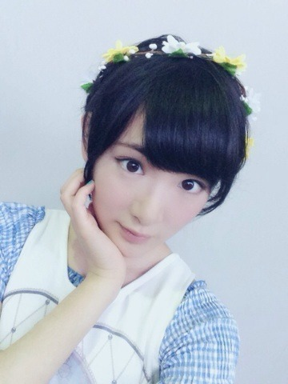

昨日
ついに会いましたっ！！
今まではKERAの表紙やブログやテレビでずっと見ていた憧れのあの人。
私がショートカットにしたいと決めたきっかけをくれたあの人。
ずっと私の目標のっ！！
AKIRA様に会いました〜〜(」ﾟﾛﾟ)｣ｵｵｵｵｵｯｯｯ
（男装モデルやバンドやってる方です！とてもかっこよくて美人な女性♡）
私取材してて、撮影していたらAKIRA様が通り過ぎて、もう心臓バクバクして撮影に集中出来ないくらいドキドキキュンキュして。
勇気を出して挨拶に行ったらお話しして下さいましたっ！！！☆☆
めちゃかっこよかった(〃ω〃)
やはり王子様でしたっ！
きゃあああ♡
同じソニーからソロデビューと聞いて嬉しくて(〃ω〃)
しかもアニメ黒執事のエンディングやるんですっ！！
AKIRA様みたいな執事いたらやばいっ！！
鼻血でまくりんごっヽ(・∀・)ノ
また会えるように頑張ろうっ！！

お仕事して来ます〜〜
へばなっ！☆